Diagnostic Plots for Fitted GVF Models
plot.gvf.fit.RdThis function provides basic diagnostic plots for fitted GVF model(s).
# S3 method for gvf.fit plot(x, which.more = 1:3, id.n = 3, labels.id = names(residuals(x)), cex.id = 0.75, label.pos = c(4, 2), cex.caption = 1, Main = NULL, ...) # S3 method for gvf.fits plot(x, which.more = NULL, id.n = 3, labels.id = names(residuals(x)), cex.id = 0.75, label.pos = c(4, 2), cex.caption = 1, Main = NULL, ...) # S3 method for gvf.fit.gr plot(x, which.more = 1:3, id.n = 3, labels.id = NULL, cex.id = 0.75, label.pos = c(4, 2), cex.caption = 1, ...) # S3 method for gvf.fits.gr plot(x, which.more = NULL, id.n = 3, labels.id = NULL, cex.id = 0.75, label.pos = c(4, 2), cex.caption = 1, ...)
Arguments
| x | An object containing one or more fitted GVF models (see ‘Usage’ for the allowed classes). |
|---|---|
| which.more | Select additional plots beyond the default one (‘Observed vs Fitted’).
Can be any subset of vector |
| id.n | Number of points to be initially labelled in each plot, starting with the most extreme. |
| labels.id | Vector of labels, from which the labels for extreme points will be chosen. |
| cex.id | Magnification of point labels. |
| label.pos | Positioning of labels, for the left half and right half of the graph(s) respectively. |
| cex.caption | Controls the size of |
| Main | Optional string to be added to automatic plot titles. |
| ... | Other parameters to be passed through to plotting functions. |
Details
Diagnostic plots can be useful both for assessing the goodness of a GVF model fit qualitatively, and for selecting the “best” GVF model among different alternatives.
This function can provide any of the following 7 plots:
(0) 'Observed vs Fitted' (1) 'Residuals vs Fitted' (2) 'Normal Q-Q' (3) 'Scale-Location' (4) 'Cook's distance' (5) 'Residuals vs Leverage' (6) 'Cook's distances vs Leverage/(1-Leverage)'
The ‘Residuals vs Fitted’ plot is special in that it will be always provided: this explains its zero-th order in the list above. The rest of the list, namely plots 1:6, exactly matches the numbering convention of function plot.lm.
Additional plots - beyond ‘Residuals vs Fitted’ - can be requested through argument which.more. Any subset of 1:6 is allowed, provided its length does not exceed 3. Therefore, at most 4 plots will be generated simultaneously.
Note that the default behaviour of this function do depend on whether input object x stores one or more than one fitted GVF models. In the first case, plots 0:3 will be returned in a multiple plot with a 2x2 layout. In the second case, only the default plot number 0 will be returned, opening a new graphics frame for each different GVF model.
Argument id.n specifies how many points have to be labelled, starting with the most extreme in terms of residuals: this applies to all plots.
Argument Main is expected to be seldom (if ever) useful: its main purpose is programming consistency at a deeper level.
All the other arguments have the same meaning as in function plot.lm.
References
See plot.lm and references therein.
See also
GVF.db to manage ReGenesees archive of registered GVF models, gvf.input and svystat to prepare the input for GVF model fitting, fit.gvf to fit GVF models, drop.gvf.points to drop alleged outliers from a fitted GVF model and simultaneously refit it, and predictCV to predict CV values via fitted GVF models.
Examples
#> Classes ‘gvf.input’ and 'data.frame': 349 obs. of 5 variables: #> $ name: Factor w/ 349 levels "age10c1","age10c10",..: 331 348 349 332 333 334 11 12 13 14 ... #> $ Y : num 924101 470061 454041 536680 312655 ... #> $ SE : num 17173 12796 11360 13970 11181 ... #> $ CV : num 0.0186 0.0272 0.025 0.026 0.0358 ... #> $ VAR : num 2.95e+08 1.64e+08 1.29e+08 1.95e+08 1.25e+08 ... #> - attr(*, "y.vars")= chr [1:7] "ind" "sex" "marstat" "age5c" ... #> - attr(*, "stats.kind")= chr "Absolute Frequency" #> - attr(*, "has.Deff")= logi FALSE #> - attr(*, "design")= symbol exdes# List available registered GVF models: GVF.db#> #> # Registered GVF models currently available: #> #> Model.id GVF.model Estimator.kind Resp.to.CV #> 1 1 log(CV^2) ~ log(Y) Frequency sqrt(exp(resp)) #> 2 2 CV^2 ~ I(1/Y) Frequency sqrt(resp) #> 3 3 CV^2 ~ I(1/Y) + I(1/Y^2) Frequency sqrt(resp) #> 4 4 SE ~ Y + I(Y^2) Total resp/Y #> 5 5 CV ~ I(1/Y) + Y Total resp #>############################################ # Diagnostic plots for fitted GVF model(s) # ############################################ ## (A) Plots of a *single* fitted GVF model ## # Fit example data to registered GVF model number one: m <- fit.gvf(ee.AF, 1) ## Default call yields 4 plots: plot(m)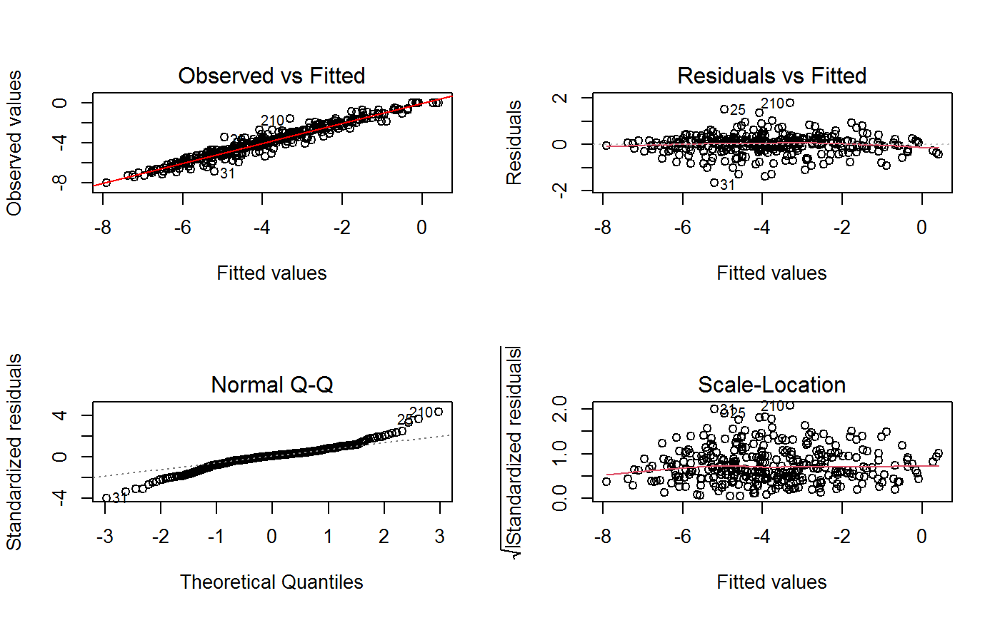# Play with argument 'which.more': ## which.more = NULL yields the "Observed vs Fitted" plot only: plot(m, which.more = NULL)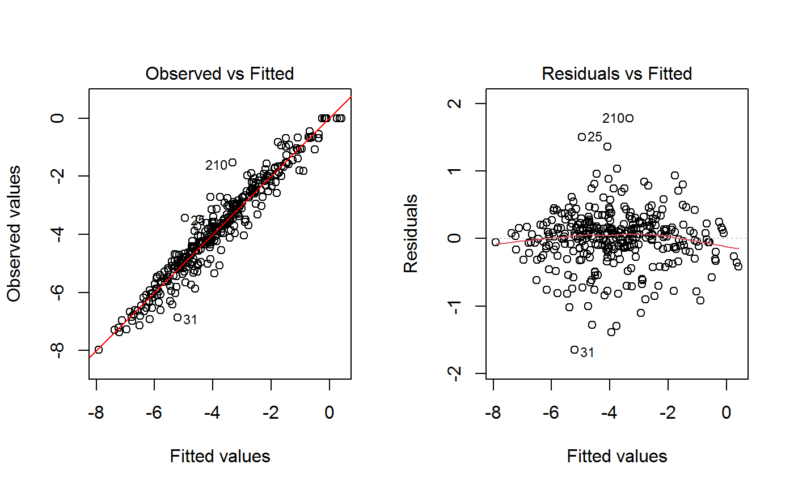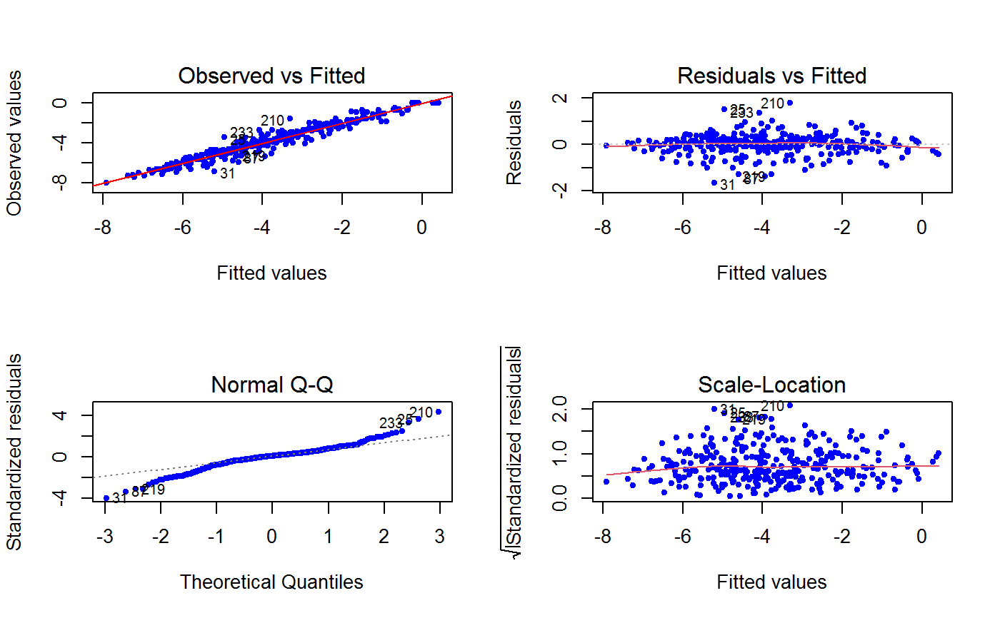## (B) Plots of *many* fitted GVF models ## # Fit example data to registered GVF models for frequencies (i.e. number 1:3): mm <- fit.gvf(ee.AF, 1:3) ## Default call yields the "Observed vs Fitted" plot reported separately for ## each model in subsequent graphics frames: plot(mm)# Play with argument 'which.more': ## which.more = 1:3 yields subsequent 2x2 plots: plot(mm, which.more = 1:3)###################################################### # Diagnostic plots for "grouped" fitted GVF model(s) # ###################################################### # We have at our disposal the following survey design object on household data: exdes#> Stratified 2 - Stage Cluster Sampling Design (with replacement) #> - [55] strata #> - [1307, 2372] clusters #> #> Call: #> e.svydesign(data = example, ids = ~towcod + famcod, strata = ~SUPERSTRATUM, #> weights = ~weight, fpc = NULL, self.rep.str = NULL, check.data = TRUE)# Use function svystat to prepare "grouped" estimates and errors of counts # to be fitted separately (here groups are regions): ee <- svystat(exdes, y=~ind, by=~age5c:marstat:sex, combo=3, group=~regcod) lapply(ee, head)#> $`6` #> name Y SE CV VAR #> 1 6:ind 293458.3 8923.806 0.03040911 79634317 #> 2 6.1:ind 40903.4 4080.234 0.09975293 16648310 #> 3 6.2:ind 93387.9 6248.690 0.06691113 39046122 #> 4 6.3:ind 118888.1 5682.201 0.04779453 32287405 #> 5 6.4:ind 34964.4 4605.358 0.13171563 21209323 #> 6 6.5:ind 5314.5 1131.029 0.21281943 1279226 #> #> $`7` #> name Y SE CV VAR #> 1 7:ind 410671.9 12714.366 0.03095991 161655092 #> 2 7.1:ind 55833.8 4814.445 0.08622815 23178885 #> 3 7.2:ind 131681.4 6148.902 0.04669529 37808992 #> 4 7.3:ind 148350.1 6489.953 0.04374754 42119485 #> 5 7.4:ind 63302.5 5796.072 0.09156150 33594447 #> 6 7.5:ind 11504.1 2216.158 0.19264069 4911355 #> #> $`10` #> name Y SE CV VAR #> 1 10:ind 219971.1 7321.992 0.03328616 53611574 #> 2 10.1:ind 32191.2 2677.704 0.08318125 7170100 #> 3 10.2:ind 69505.8 4025.611 0.05791763 16205547 #> 4 10.3:ind 89225.7 3619.757 0.04056855 13102640 #> 5 10.4:ind 24630.7 3092.299 0.12554653 9562313 #> 6 10.5:ind 4417.7 1119.309 0.25336928 1252854 #>## (C) Plots of a *single* GVF model fitted to different groups ## # Fit registered GVF model number one separately inside groups: m.g <- fit.gvf(ee, 1) ## Default call yields 4 plots reported separately for each group ## in subsequent graphics frames: plot(m.g)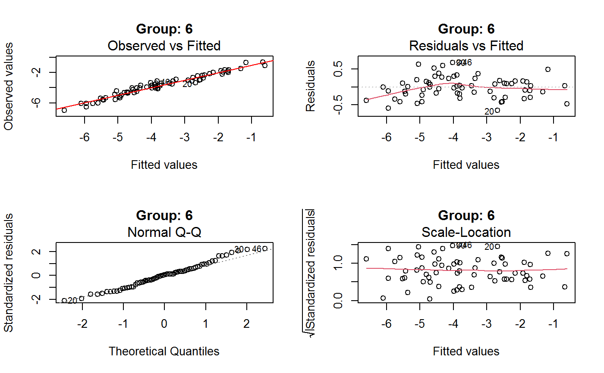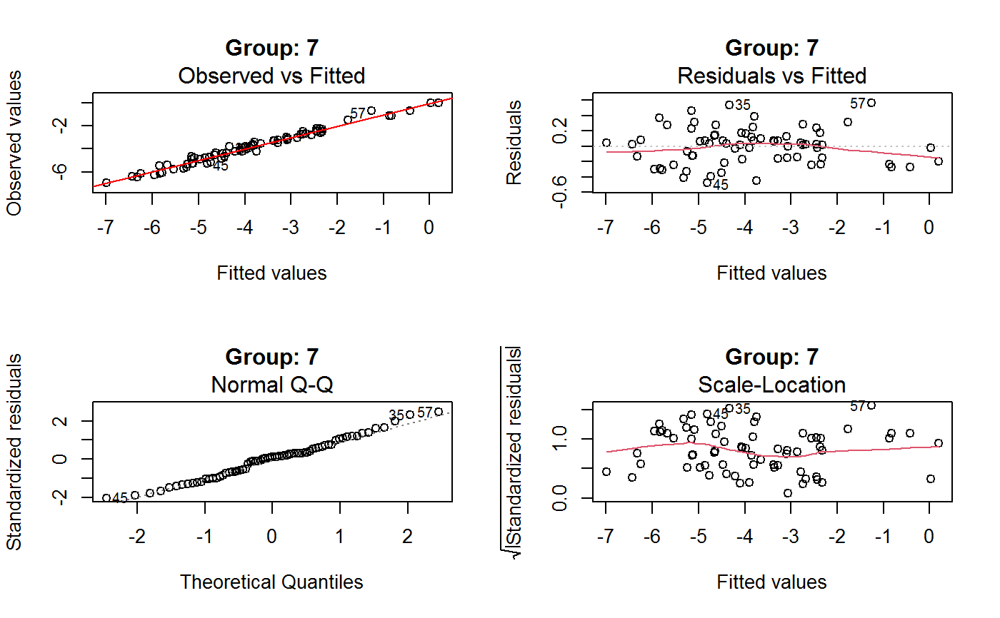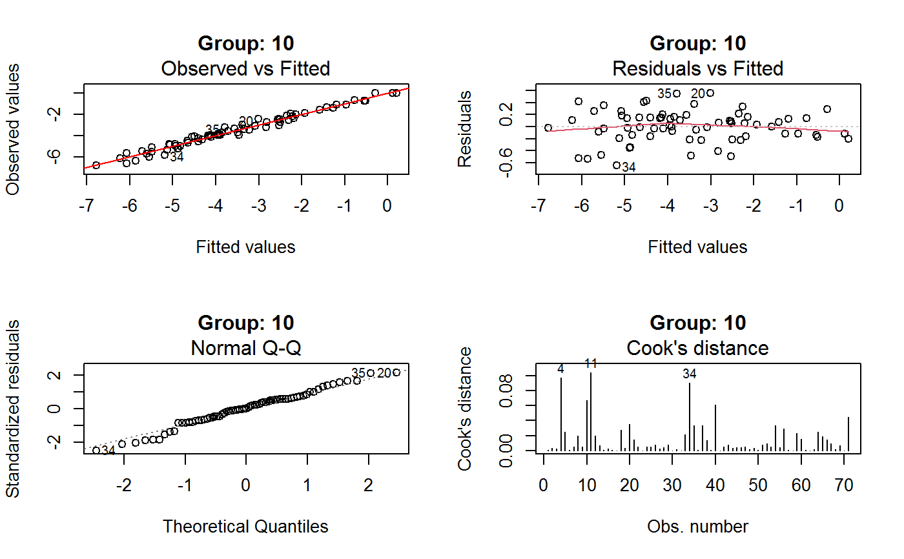## (D) Plots of *many* GVF model fitted to different groups ## # Fit all registered GVF models for frequencies separately inside groups: mm.g <- fit.gvf(ee, 1:3) ## Default call yields the "Residuals vs Fitted" plot reported separately ## for each group in subsequent graphics frames: plot(mm.g)## Play with argument 'which.more' to add more plots: plot(mm.g, which.more = 1:3, id.n = 6, col = "blue", pch = 20)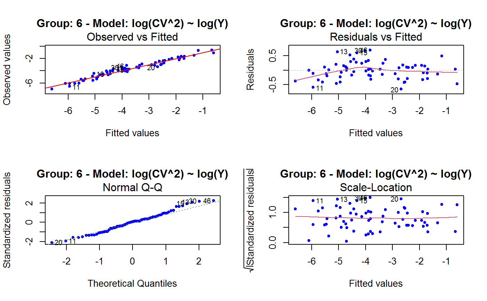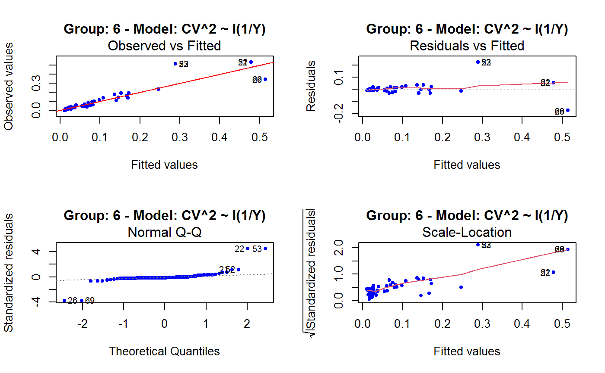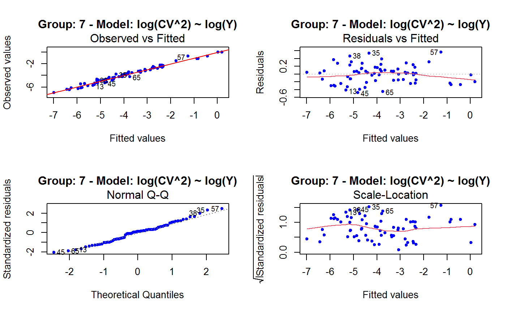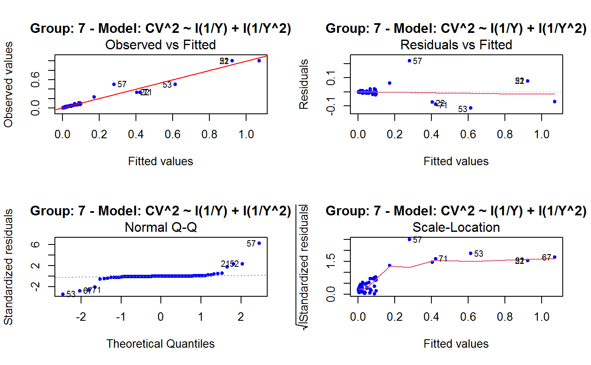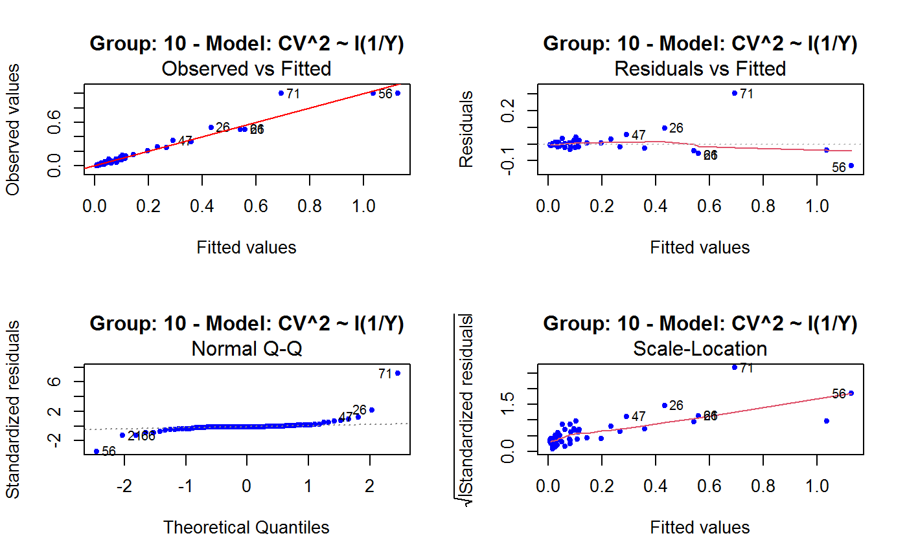